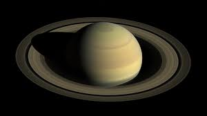

Solar System

- Solar System :-
The collection of eight planets and their moons in orbit round the sun, together with smaller bodies in the form of asteroids, meteoroids, and comets are called Solar System
- Mercury
- Venus
- Earth
- Mars
- Jupiter
- Saturn
- Uranus
- Neptune
- The Planet Mercury is the smallest and nearest planet
- Mercury's period of revolution is the shortest which is 88days
- The surface which face towards the sun which is aprox. 427.C is very hot
- The other side of Mercury is very cold which is aprox -173.C which is very cold
- No natural Satellite. And can be seen by Naked Eyes
- Venus is the brightest planet of Solar System due to the prescence of cloudy atmosphere which reflects 3/4 of sunlight of it.
- It can be seen by naked eye for 1-3 hours before sunrise and 1-3 hours after sunset
- It does not have any Natural Satellite. Venus also shows phases like moon.
- It is very hot planet because of high % of Carbondioxide.
- Earth is only the planet where life is known to exit.
- Moon is the Naturl Satellite of Earth
- Earth is at the perfect position from sun due to this earth have special environment.
- Earth takes 365 days to complete one revolution, and 24hours for one rotation.
- Mars is the Reddish in colour because of the rust present in its soil
- It have a thin atmosphere which contains traces of Carbondioxide, Nitrogen, Hydrogen and Oxygen
- It can be seen by nakes Eyes
- It has 2 Natural Satellite which are:- Phobos and Deimos.
- Jupiter is the Largest Planet of the Solar System
- About 1321 earths can be placed inside Jupiter
- Jupiter has 53known and 26 provisional satellite
- Atmosphere of Jupiter mainly contains Helium and Hydrogen. It has Faint ring around it
- Jupiter can be easily seen by naked Eyes.
- Saturn is the beautiful planet due to the Ring system around it
- It appears yellowish in color
- Saturn has 53 confirmed and 9 provisional satellite
- Saturn is the least dense planet, its density is less than water. Saturn can float on water
- It can be seen by naked Eyes.
- Uranus also has a ring system
- It has 27 natural satellite
- Uranus rotates from east to west
- Uranus is highly tilted. Its axis of rotation is 97.8degree, this means it rotate like a ball and earth like top
- It can not be seen by naked Eyes
- Neptune also has a ring system
- Neptune is very far from sun and due to this the planet is very cold
- Neptune takes the maximum time to revolve
- Storm occurs all the time in Neptune
- It can't be seen by nakes Eyes
- It has 13 known satellite and one provisional satellite.
The planets of the solar system are:-
Mercury

Venus

Earth

Mars

Jupiter

Saturn
Uranus

Neptune